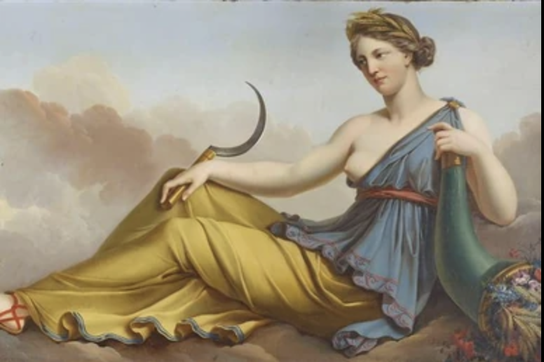

| Élément | Description |
|---|---|
| Origine | Ouranos et Gaia |
| Époux | Cronos |
| Enfants | Hestia, Déméter, Héra, Hadès, Posèidon, Zeus |
| Attributs | Pierre emmaillotée, trône, tambour sacré |
Rhéa, fille de la Terre et du Ciel, devint l’épouse de Cronos lorsque celui-ci renversa son père.
Reine des Titans, elle donna naissance aux enfants qui deviendraient plus tard les grands dieux de l’Olympe.
Mais une ombre pesait sur son bonheur. Terrifié par une prophétie annonçant sa chute,Cronos avalait chacun de leurs enfants dès leur naissance.
Rhéa vit disparaître Hestia, Déméter, Héra, Hades et Poseidon, impuissante face à la cruauté de son époux.
Lorsque naquit Zeus, elle refusa que le destin se répète. Sur les conseils de sa mère Gaia, elle se rendit en Crète et y cacha son nouveau-né dans une grotte du mont Ida.
Elle remit àCronos une pierre enveloppée de langes, qu’il avala sans soupçonner la tromperie.
Zeus grandit en secret, protégé par les nymphes et les guerriers qui couvraient ses pleurs du fracas de leurs boucliers.
Devenu adulte, il força Cronos à libérer ses frères et sœurs et mena la guerre contre les Titans.
Grâce au courage et à la ruse de Rhéa, les dieux olympiens purent voir le jour et instaurer un nouvel ordre divin.